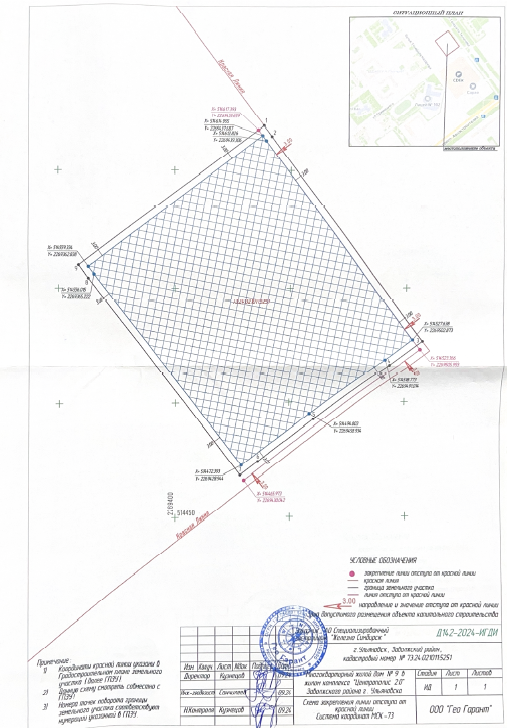
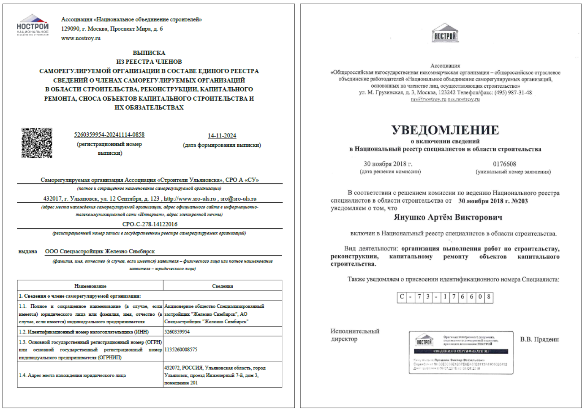

Пакет документов для ГСН
Пакет документов, направляемых в органы строительного надзора, исчерпывающий и определен ст. 52 ГрК. Он состоит из следующих документов:
1. Копия разрешения на строительство
В предыдущих уроках разобрали, что это за документ и как его получить.
2. Проектная документация в полном объеме
Помимо шести разделов, предоставляемых для РНС, прикладываются ИОС (инженерные сети), ПБ (пожарная безопасность) и иные разделы, предусмотренные при проектировании объекта.
3. Копия документа о вынесении на местность линий отступа от красных линий
Документ готовят специализированные геодезические организации. По сути, это схема с земельным участком, отступами от границ, пятном застройки, красными линиями и расстояниями до них.
Красная линия — условное обозначение в градостроительстве, отделяющее территории общего пользования (улицы, скверы) от частной застройки и определяющее границы для капитальных строений.

4. Общий и специальные журналы
Общий журнал работ — сшитый, пронумерованный журнал для ежедневных записей о строительно-монтажных работах. Форма утверждена Приказом Минстроя РФ от 16.05.2023 № 344/пр и не подлежит изменению.
Специальные журналы заполняются ежедневно для узких видов работ: например, журнал бетонных работ (марка бетона, объем, температура, время, дата, отметка лаборатории); журнал сварочных работ (все сварные швы); журнал монтажа конструкций (для сборных элементов — панелей, перекрытий, фундаментов). Их количество зависит от конструктива и видов работ на объекте.
На момент подачи в ГСН заполнены только титульные листы (название объекта, адрес, застройщик с реквизитами, ответственные специалисты, сведения о ГСН, РНС и экспертизе).

5. Положительное заключение экспертизы проектной документации
Положительное заключение экспертизы проектной документации получают после проверки проектной документации на соответствие требованиям технических регламентов. Выдает специализированная организация в области экспертизы проектной документации. В зависимости от финансирования объекта это может быть государственная экспертиза — как правило, для объектов с финансированием за счет бюджета, или негосударственная (частная) — это частные организации, имеющие в своем штате специалистов-экспертов, обученных на право проведения экспертизы проектной документации. Все заключения экспертизы должны быть внесены в единый государственный реестр заключений (ЕГРЗ).
Ранее положительное заключение направлялось в бумажном виде и представляло собой краткое изложение проекта, описание конструктива, инженерных сетей и т.д. Сейчас документ постепенно переводят в электронный формат вместе с проектной документацией. Имея определенные права доступа к сайту ЕГРЗ, можно скачать заключение, но в нем не будет такого подробного описания, как ранее.
Когда все документы на руках, заполняют извещение о начале строительства, используя данные из них (в т.ч. сроки завершения работ).
Несмотря на исчерпывающий перечень, регионы могут дополнять его актами: выписки СРО, НРС, график производства работ, договоры авторского надзора, подряда и т.д.

Непредоставление обязательных документов приведет к мотивированному отказу в регистрации извещения. Заявитель может донести их в течение 3 рабочих дней лично — извещение примут.